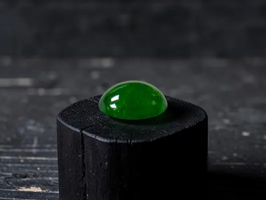

和田玉：羊脂白玉的千年溫潤
羊脂白玉一詞，是中國玉文化的終極審美——它不閃不耀，卻溫潤如凝脂。

核心定義
和田玉是軟玉（nephrite）的中國經典產地命名：主要礦物為透閃石（tremolite）與陽起石（actinolite），硬度 6–6.5，折射率約 1.61。產地以新疆和田最負盛名，青海、俄羅斯、韓國等地也有出產——「和田玉」的學名應是「軟玉」，產地只是品質敘事。
「羊脂白玉」是和田玉的最高審美：白如羊脂（動物脂肪）、油潤如凝脂、結構細膩——它不追求翡翠的豔麗，追求的是內斂溫潤的君子氣質，呼應「君子比德於玉」的文化傳統。
特徵與分類
| 色系 | 名稱 | 特徵 |
|---|---|---|
| 白玉 | 羊脂白玉（頂級） | 白潤如脂 |
| 青白玉 | 白中帶青 | 過渡色 |
| 青玉 | 青灰綠 | 沉穩 |
| 碧玉 | 深綠 | 黑點常見 |
| 黃玉 | 黃褐 | 稀有 |
羊脂白玉的條件：白度夠（羊脂白）、油潤度夠（油脂光澤）、結構細（肉眼難見晶粒）、無瑕無裂。市場上「羊脂白玉」被濫用——真正夠格的，萬中選一。
科學原理
軟玉的油脂感來自它的微結構：細小針狀透閃石晶體緊密交織（氈狀結構）——光線在纖維間漫反射，呈現溫潤的油脂光澤；這個結構也讓軟玉韌性極佳（耐撞不易裂），是古代玉器流傳千年的物理基礎。
羊脂白的「白」來自近乎純淨的透閃石（含鐵極少）——陽起石（含鐵）多則偏青。白與油潤的結合，需要極純的礦物組成與極細的結晶——地質條件的稀有，就是羊脂白玉的價格根源。
鑑定與鑑別方法
- 看光澤：油脂光澤（vs 翡翠玻璃光）
- 掂比重：約 2.95（比翡翠輕）
- 看結構：纖維氈狀、無顆粒感
- 敲擊：聲音沉悶（vs 翡翠清脆）
- 證書確認：軟玉/和田玉（nephrite）
市場行情與保養建議
行情上，和田玉以「白度＋油潤＋細膩」定價：頂級羊脂白玉雕件價格以十萬至百萬人民幣計；青玉、碧玉則親民。近年俄料、青海料大量上市，新疆和田料的產地溢價與品質辨識是市場焦點。
提醒：市場常以「和田玉」泛稱所有軟玉——證書會標明產地或僅標「軟玉」；追求產地敘事者要認證書，追求品質者看油潤細膩。先看玉質，再聽產地。
常見誤區
和田玉是軟玉的品質代名詞，但學名是 nephrite——青海、俄羅斯也有軟玉。「和田玉」三個字在市場上是泛稱，產地需另證。
白要配油潤：乾白的「死白」遠不如微青但油潤的玉。「羊脂」二字的重點是油，不是白——白而乾，不是羊脂。
冷知識
孔子以玉的溫潤比君子的仁德——玉文化因此成為華人道德美學的載體，和田玉是這套文化的「正統」。
軟玉的氈狀纖維結構讓它韌性極佳——它比翡翠耐摔、比多數寶石耐用，是「傳家寶」的物理擔當。
反直覺觀點
韌性（抗衝擊）與硬度（抗刮）是兩回事——軟玉的纖維交織讓它韌性頂級，摔不壞、碰不裂，比硬卻脆的寶石耐用得多。
微帶暖調的羊脂白比死白更潤——審美的最高級是「油」不是「白」。白到發乾的玉，反而輸給微青油潤的玉。